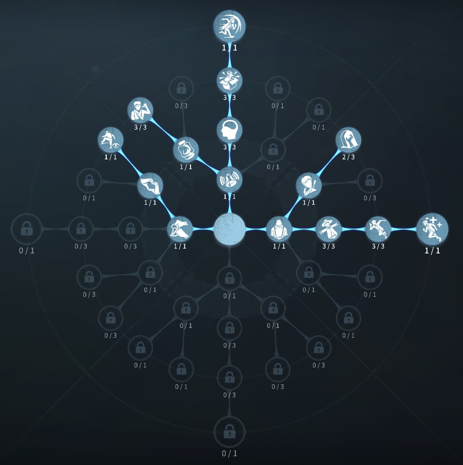
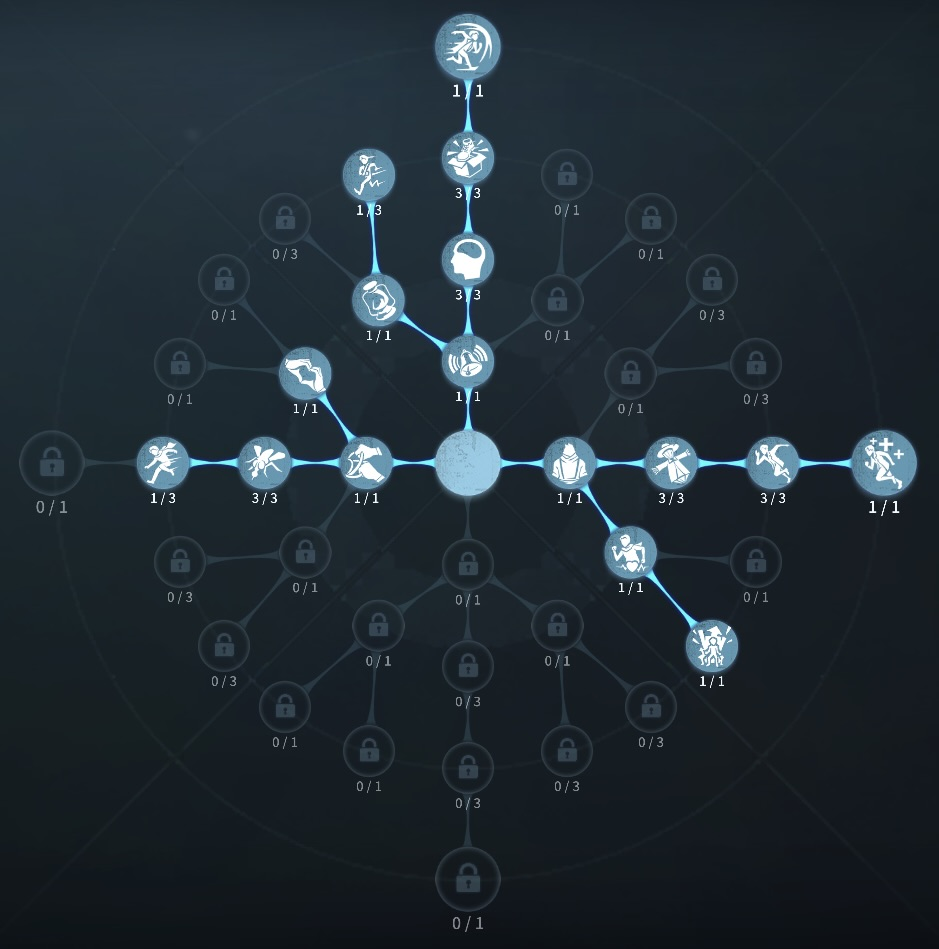

空軍の評価
銃でハンターを討伐
外在特質と特徴
特質1:精確打撃
・空軍は信号銃を持っており、10m以内のハンターに命中するとスタンさせることができる。命中したハンターを約4.2秒間気絶状態にさせる。・ハンターの信号銃のスタン回復速度を30％低下させる。
特質2:頑強
・ロケットチェアの発射速度10％低下特質3:仲間思い
・ほかのサバイバーが吊られているとき移動速度5％増加。解読速度25％低下特質4:長期訓練
・板窓操作10％上昇。40秒に１度板窓に近づくと4秒間移動速度が15％上昇し、板窓操作10％上昇する。特徴
銃を活用することによって、風船救助、チェイス補佐もできる。また、長期訓練で速度があがるので、活用しながらチェイスができる。
いたって分かりやすいサバイバー
基本的な立ち回り方
1. 追われた時
銃を警戒させつつチェイスに入ろう！
また、銃を撃つタイミングが非常に重要でハンターの特質興奮が上がる前に打つのか打たないのかを判断する。
長期訓練のクールタイムなど確認しながら活用しチェイスをする。
椅子耐久も10％あるので、吊られても少しは得
2. 追われない時
解読に専念し、 他のサバイバーが吊られた場合仲間思いが発動するので、救助に行くか行かないかを判断する。
また、風船救助など場合はエモートを駆使することにより風船から降ろしたり、興奮を使用したりするので揺さぶりをかけよう！
チェイス補佐をする場合は必ず銃を当ててあげよう!
救助の場合は、1ダメージ受けて、銃を打ちセカンドチェイスに入れてあげるのがおすすめ（無傷の生還の方法も強い）
おすすめの内在人格
フライホイール型人格
この内在人格は、癒合3振りにより治療は最大化、うたた寝に振ることで空軍の素の椅子耐久を生かす人格

フライホイール解読型人格
この内在人格は、マッスルメモリーに振ることでチェイスを最大化して、観客効果で解読を上げた人格


みんなのコメント